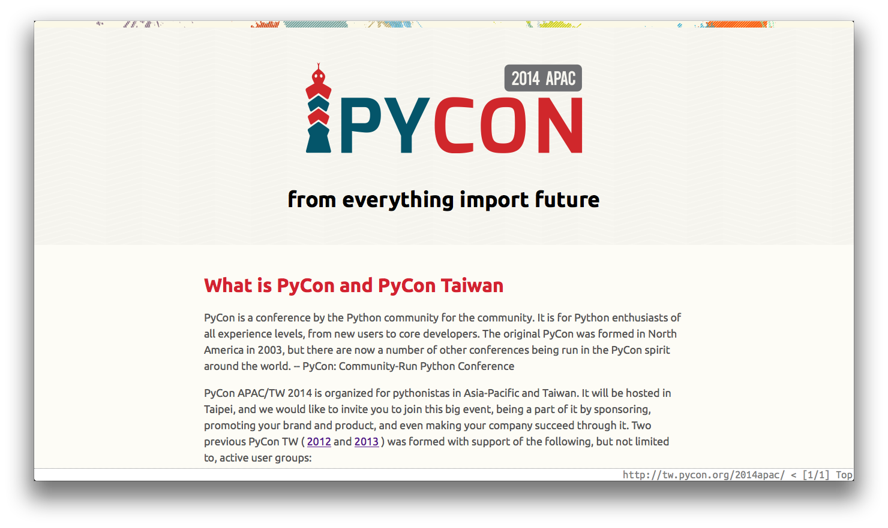

Taipei.py II 3 事
Keith Yang
Taipei.py II 3 事
Keith Yang (@keitheis)
古早古早以前
場景：@COSCUP 2013 Python Taiwan 社群攤位
人物：小Q (@littleq0903) 與我
- 「ㄝ…Keith～跟你說個好消息
- 「Yung-Yu (@yungyuc) 建議我準備台北的 Python 社群聚會
（續）
- 「可是還要找一個 Organizer
- 「因為我是 GTUG 的主持人，再帶另一個太累了…」
- Keith：「．．．」
古早古早古早以前
場景：@PyHUG
人物：Yung-Yu (@yungyuc) 與我
- Yung-Yu：「嘿 Keith 你要不要在台北辦 Python 社群聚會呀？」
- Keith：「．．．」
- （大意：「喔。」）
於是在古古早早以前
- 跟小Q請教了 GTUG 的活動舉辦辦法後
- 輕輕地我跳了坑…
- 也開始了我們的第一次…
2012-10-25
Machine Learning and Optimization tools in Python
by c3h3
2012-11-29
Pinkoi x Startup x Python x Plone x CMS x EnhacedYAML
by Mike, marr and mosky
2012-12-20
Celery in the Django
by Walter Liu
2013-01-14
Big Python - Do you play Super MaRiO?
by Kilik Kuo
Lighting Talk by WhosCall
Taipei.py 的奇幻漂流
- (2013-02) from Registrano to Meetup
- (2013-02) from 果子咖啡 to The Manx 贊助場地
- (2013-05) from The Manx to CLBC
Workshop: Django
Django 讀書會
- [Django Book 1-2] - Taipei.py - Taipei Python User Group - Meetup
- [Django Book 3-4]
- [Django Book 5-6]
- ...(continue)
Make Friends: ? x Taipei.py
獨樂樂不如眾樂樂
眾樂樂不如會樂樂？
2013-06-17．．．
MLDM x Taipei.py
2013-07-02．．．
Python for Google Cloud Platform x Taipei.py
Tainan.py
2013-06-14．．．
一個從 Taipei.py 奇虎南下的傢伙開的。
他就是 Joe (Chun-Yu Tseng)。Taipei.py 社群議程 in COSCUP 2013
2013-08-04
OK That's fun.
Thank you all.
貳：第 101 式
- 「怎麼入門程式設計？」
- 「你很想很想成為 programmer？」
你不是孤單的！
更多樂趣．．．
- Codecademy/W3Schools HTML, CSS, JavaScript (jQuery, Ajax)
- Udacity CS253 – Web Development
- GitHub, Vim or Sublime Text
- Udacity CS255 – HTML5 Game Development
- Django
課程列表來自於 Raymond Lai
更多更多樂趣．．．
- Nand2Tetris - Computer Architecture
- Udacity CS215 – Algorithms
- Udacity CS258 – Software Testing
- Udacity CS259 – Software Debugging
- Udacity CS262 – Programming Languages
課程列表來自於 Raymond Lai
PyClab
2013-10
- Pronounce:
Pyk.lab - 參加即分享：每人提供 5 ~ 15 分鐘的 Python 相關心得分享。
- "By pythonista, for pythonista."
PyClab rules
- "The first rule of PyClab is you
do talk in PyClab."
HappyCoder,
what did you learn from from #HappyDesigner?
「沒有道歉、只有上台。」
「儘情佔發言台，聚會才不會空轉。」（並且不用去選立委）
謝謝大家！
謝謝 Taipei.py 的各位夥伴。
這真好玩。
特別感謝
Hsu Wen Chang ("Tim"), Yung-Yu Chen
PyHUG - Python Hsinchu User Group
Taipei.py - Taipei Python User Group
Tainan.py - Python Tainan User Group
PyCon APAC 2014 in Taiwan
 on GitHub